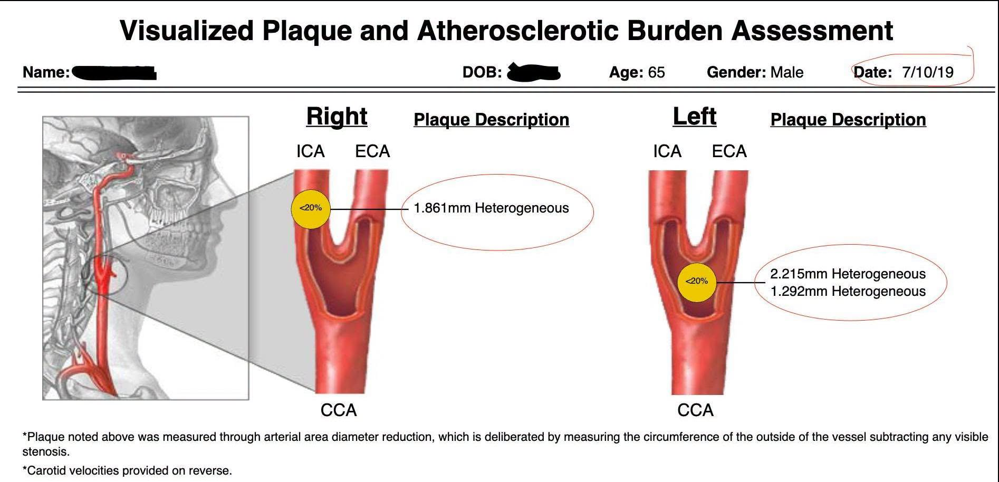

Can fasting stabilize or even reverse plaque? Maybe
There is considerable biological plausibility for this.
The underlying mechanism is autophagy:
- ↪ Autophagy may help explain how major weight loss reverses soft plaque
- ↪ Sabatini on diet and mTOR: limit amino acids and insulin; ~18 h fasting may inhibit mTORC1
- ↪ Image post suggesting fasting can mimic hunter-gatherer low-LDL physiology
- facebook.com/share/r/1DAoYAVBDa
- facebook.com/share/v/19BMG7B7hA
- ↪ Excess calories shut down autophagy, one reason calorie restriction extends lifespan
- facebook.com/share/r/1J35PEH441
In the absence of food, the body literally begins to consume its own tissue, prioritizing the recycling of old damaged tissue first. This might include arterial plaque.
Autophagy is an ancient survival mechanism that evolved to keep us alive when food was scarce. Logically, it makes sense for the body to feed on damaged tissue first, before being forced to catabolize healthy tissue.
At the very least, fasting causes significant weight loss. And major weight loss alone (e.g. 30+ lbs) has been demonstrated to reverse plaque: Dietary Intervention to Reverse Carotid Atherosclerosis (Circulation, 2010).
#fastingHD #reverseHD #autophagyHD #mtorHD #plaqueHD #valterlongoHD
Can fasting shrink plaque and is intermittent fasting enough?
I have seen multiple patients in my practice apparently get some of their arterial plaque to regress with fasting, even with no drugs or supplements or other changes added to their plan. While this is purely anecdotal, I think there is mechanistic plausibility for why it could have happen and, when done correctly, the primary "side effects" are really only positive, including potential reduction in risk for diabetes, cancer, autoimmune disease, and dementia.
For these reasons, I am a big fan of fasting and recommend it often, but only with some supervision. This is also a reason why I was very interested in the results of a recent study on fasting I saw (Systemic proteome adaptions to 7-day complete caloric restriction in humans (Nat Metab, 2024) ). In it, researchers had 12 people do a full 7-day water-only fast, and tracked ~3,000 proteins in their blood every single day, before, during, after the fast to see how things changed and in what directions.
A crucial finding was that nothing much happens for the first 2-3 days. Then somewhere around day 3, the body basically flips a switch. At this point, over 1,000 proteins start moving in a coordinated way, and it's not just metabolic stuff like you'd expect, like more fat burning, etc to maintain energy. A huge chunk of what changes is extracellular matrix proteins, literally structural tissue remodeling signals, showing up from joints, brain, all over the body. This may be why I see the changes I sometimes do with people's arteries.
Here's the thing though, a 7-day water fast is absolutely a very serious endeavor, and no joke. Most people aren't going to do that, and honestly, for a lot of my patients I wouldn't even recommend it at all without close, daily supervision.
That's where Valter Longo's Fasting Mimicking Diet (FMD) comes in. Instead of pure water fasting, his approach involves a very low-calorie, low-protein, 5-day protocol designed to literally trick the body into thinking it's fasting. Despite still being allowed small amounts of food, it's still getting you into a lot of that same metabolic switch territory. It's typically much easier to tolerate, easier to repeat periodically, and there's a real and strong clinical trial base building behind it.
In the images below you can see a particularly dramatic example, where the husband of a patient of mine decided to do the modified fasting regimen I recommended for her (based on the work of Valter Longo) while otherwise continuing to eat a very terrible, atherosclerosis promoting diet and lifestyle in between each fast.
After this year long plan, there was a significant reduction in plaque in multiple locations, with just one spot where the apparent increase is so small it is likely the result of some imaging "noise", and is more calcified and stable. The overall effect is very clear though.
That said, I would never recommend taking his exact approach as, again, this has not been researched enough to be able to expect his results in everyone, and healthy eating in between will only help more!
Lastly, some people out there are claiming certain "hacks" can get the same deep benefits in just 24 hours. I get the appeal, but based on what this study actually shows, that's just not how the biology works. The real systemic remodeling only showed up after sustained caloric restriction over several days. You can't fully compress that timeline with a hack, even if you can cause certain things to happen quicker. It's about your body recognizing a sustained absence of food and shifting into a completely different operating mode. A 24-hour fast is a nice reset. It's just not the same intervention.
So if true water-only fasting feels like too much, the FMD might be a more realistic on-ramp to get some of these same benefits, without the full 7-day commitment. Here is bunch more information on this approach: Fasting for Health | Vital Human (vital-human.com)

